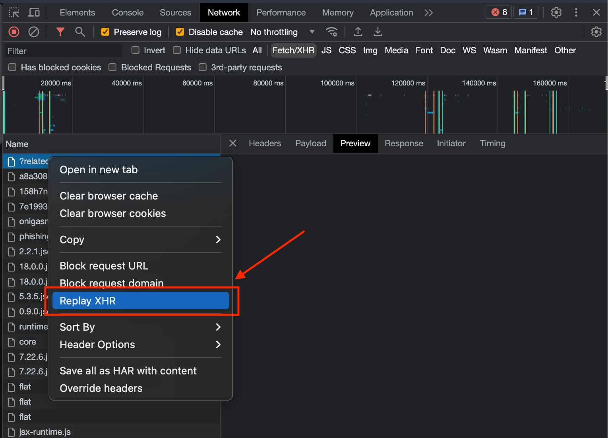

Replay an AJAX request in Chrome
If you need to replay an async request in Chrome, and reloading the whole page is too slow, there's the option to replay the request using the developer tools, specifically in the networks tab. See screenshot below:
